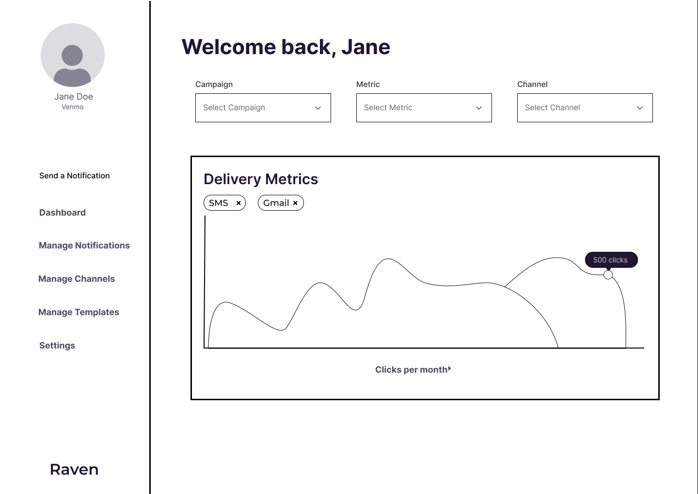

Designing an Interactive Interface for Raven
We chose to design an interactive interface for Raven, an emerging startup to manage notifications across SMS, Email, Push, Slack, WA & more. We went through the iterative design process to make a mock up of a solution to the Raven's concept.

Raven is a B2B product notification manager allowing businesses to monitor the performance of their notifications across channels (e.g. SMS, Email, WhatsApp, etc.) and streamline the notification sending process. Raven was part of Y Combinator’s S22 batch.
For a more in-depth description of the startup, feel free to browse Raven's Y-Combinator page here.
Initial Sketches.
Each group member made a set of 3 sketch brainstorms for our interface. The following are the four sets of initial sketches we have. We each attempted to explore different design alternatives, with variance in layout hierarchies, list formats, charts. We also experimented with which pages should make up the most important part of the solution: for example, one of our sets included an API documentation page.
Sketch Set A:
Sketch Set B:
Sketch Set C:
Sketch Set D:
Wireframes.
Below are the lo-fi prototypes our team made for each screen necessary for the Raven web application.
Dashboard
Manage Notifications

Create Notification

Send

Manage Channels

Manage Templates

Interactive Hi-Fi Mockup and Feedback.
*Hover and scroll over the screen or press the full screen button on the right to interact with the prototype*
If the Figma prototype does not load below, then access it here.
Feedback from Critique Studio:
Below is a bulleted summary of the feedback we received during the critique session. We wrote this list down in real time, and organized it into the pages it fits under. Some of the most glaring feedback points were directed towards the Send Notifications process, which we found reasonable as sending notifications is the primary task of our interface. We also received other feedback noting that the design of the Manage Templates page was inconsistent with the rest of our design choices, and that the Preferred Channels interface could be improved as well.
Create New Notifications (under Send Notification process):
- Fix input field for ‘Recipient’
- Make drop-down menu interactive
- Make ‘Next’ button lead to the next page (or get rid of it and preserve the 2 radio buttons)
- Make date picker functional
Select Preferred Channels:
- Change ‘Next’ to ‘Send’
- Add a ‘Sent successfully’ popup indicating the task is complete
Dashboard:
- Label axes
- Increase the readability of the chart: labeling the delivery metrics
Manage Templates:
- Users in the critique section noted that the design of our interface on this page was inconsistent with the rest of our UI
- Make design more consistent with existing pages
User Testing.
Instructions for Users
"Hello and thank you for participating in this user test! Before starting, we’d like to note that we are testing an interactive mockup, rather than an actual website. For some context before conducting the test, below is a brief description of the product:
Raven is a B2B product notification manager allowing businesses to monitor the performance of their notifications across channels (e.g. SMS, Email, WhatsApp, etc.) and streamline the notification sending process.
Imagine you work on the marketing team of a medium to large B2C business. The task we would like you to perform with our mockup is sending a notification. Since we’d like to measure how intuitive this task would be for a user, we’ll keep the required steps vague to see if you are able to figure out how to complete the task. We encourage you to think aloud as you perform the task to better note your thought process."
Subtasks:
- Navigate to the send notifications page
- Create a notification
- Configure the channels you want to send the notification to and the providers you’d like to send the notifications through,
Post-test Questions for Users
- On a scale of 1-5, with 5 representing the highest possible score, how intuitive was navigating to the “Send Notification” page? Feel free to elaborate on your score.
- On a scale of 1-5, with 5 representing the highest possible score, how intuitive was creating a new notification? Feel free to elaborate on your score.
- On a scale of 1-5, with 5 representing the highest possible score, how intuitive was selecting channels and sending a notification after creating the notification? Feel free to elaborate on your score.
- Aside from the aforementioned steps, did you have any other specific difficulties sending a notification?
- On a scale of 1-5, with 5 representing the highest possible score, how well-designed was the interface overall?
Results and Analysis
Video 1Video 2
Video 3
In our UserTesting, we assigned the task of sending a notification, with the subtasks of navigating to the ‘send notifications’ page, creating a notification and configuring the channels.
Our users encountered the following errors: when creating a notification, our date picker did not collapse when users selected a date, and users were unable to select a year. Additionally, while users could type into our input fields, deletion did not work. Nevertheless, all three of our testers successfully completed our task and subtasks, and expressed enthusiasm about our interface, with one user stating he “would definitely use it if [his] company needed a product like this.” All users indicated the interface was easy to learn and use, and praised the decision to assign a distinct color to the ‘send a notification’ button.
As for our post-test questions, despite submitting them on UserTesting.com our users did not receive these questions for review, but responded to questions prompted by the platform.
We used this feedback to improve our product by fixing the date picker, and recognize the need to resolve the input field bug as well.
Contact Startup.
We contacted Raven to ask for feedback and insight. We're looking forward to their response!

Conclusion.
In this assignment we learned the value of iterating over our design and incorporating user feedback into iterations of a product. We particularly benefited from observing screen recordings of users performing critical tasks to inform learnability and usability of our design and identify areas for improvement.